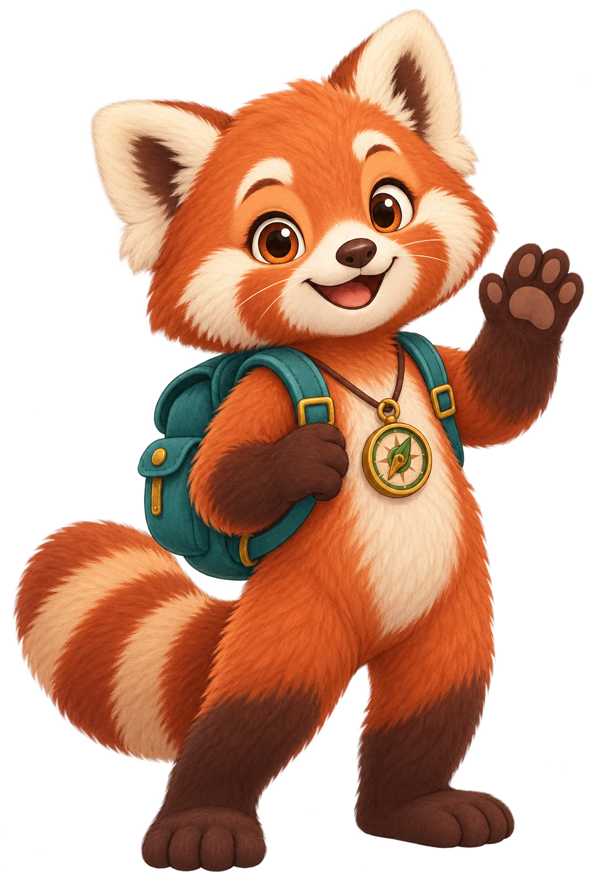
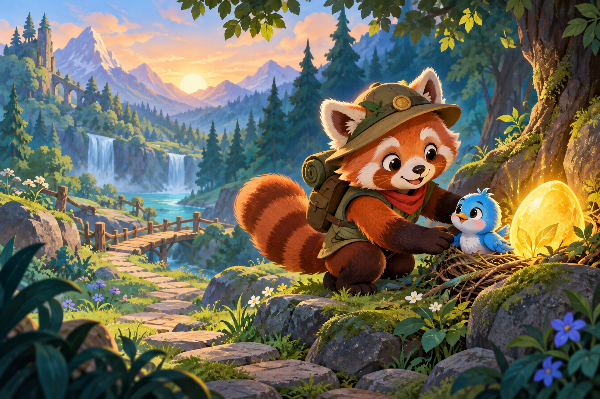
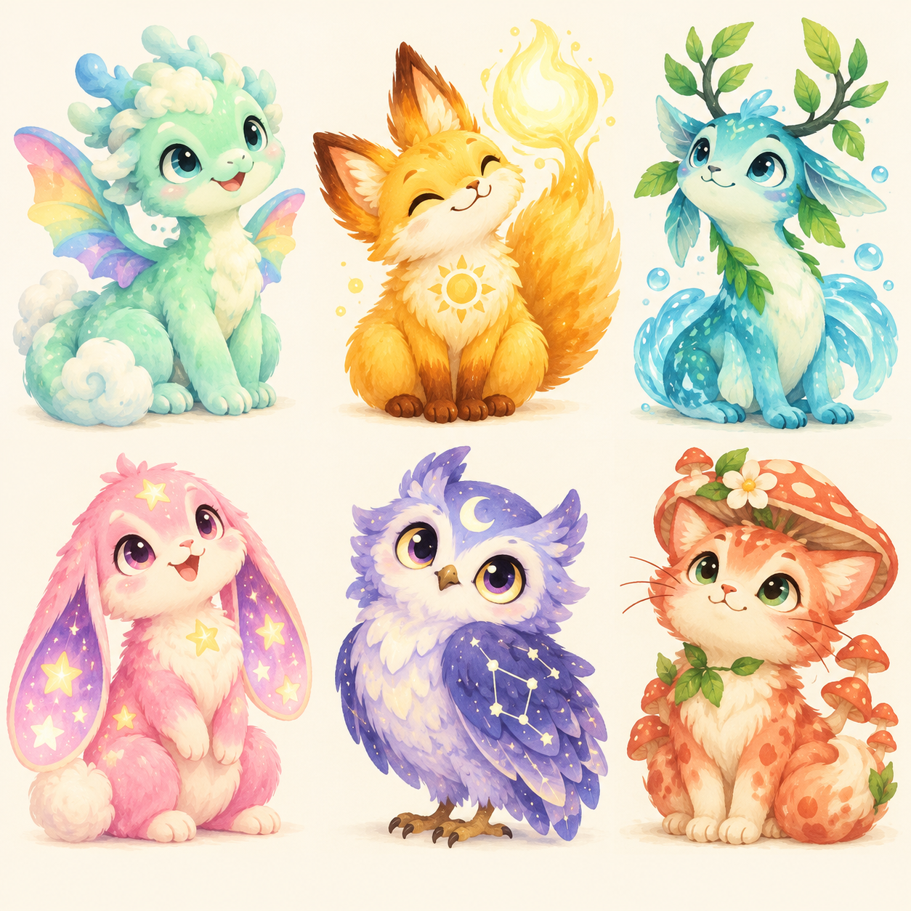

RESCUED
Pip
Blue Songbird
A NEW WORD ADVENTURE
ออกช่วยเพื่อนสัตว์ เก็บคำศัพท์ และเปิดโลกใหม่ไปกับ Maple

FOREST TRAIL · WORLD 1
สวัสดี นักสำรวจ — พร้อมช่วย Pip หรือยัง?
คำนี้แปลว่าอะไร?

MISSION COMPLETE
นักสำรวจ เก็บประกายคำศัพท์และเติมพลังให้ไข่ปริศนา
RESCUE JOURNAL · 20 FRIENDS
สัตว์จริงและเพื่อนในจินตนาการจาก 4 โลก ทุกตัวมีเรื่องราวและพลังเฉพาะ

YOUR TEAM
ทบทวนคำศัพท์เพื่อเพิ่มความสนิท ฟักไข่ และปลดล็อกเพื่อนระดับ Rare กับ Mythic
Blue Songbird
Orange Fox
Trail Turtle
Leaf Fawn
Berry Hedgehog
Shell Otter
Goggle Frog
Golden Capybara
Compass Squirrel
Rose Axolotl
Snow Leopard
Mountain Goat
Moon Moth
Dream Elephant
Arctic Fox
Cloud Dragon
Sun Fox
River Sprite
Star Bunny
Mushroom Cat
ทุกภารกิจเติมพลัง 20% — มีโอกาสฟักเพื่อน Rare หรือ Mythic
EXPLORERS · ALL TIME
กำลังโหลดอันดับ…